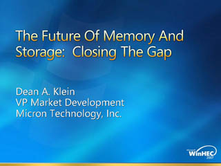
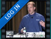
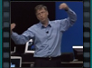

Windows Memory Management Advance
Speaker(s): Landy Wang
PCI I/O Virtualization Standards: Implementation
Speaker(s): Mike Krause, Renato Recio
Future of Memory and Storage

Speaker(s): Dean A. Klein
UEFI Implementation Guidelines
Speaker(s): Andrew Ritz
Windows Server Longhorn
Speaker(s): Iain McDonald
Dynamic Partitioning: Windows Server

Speaker(s): Davis Walker
WHEA Systems: Design and Implementation
Speaker(s): John Strange, Mukund Khatri
Power Management: Windows Server
Speaker(s): Stephen Berard
Virtualization in Windows Server
Speaker(s): Mike Neil
The 10 Most Important Things About Failover Clustering
Speaker(s): Jim Teague
Application and Presentation Virtualization
Speaker(s): Alex Balcanquall
NPIV SAN Integration and Microsoft Virtualization
Speaker(s): Therron Powell, Mark Karnowski
WinHEC 2007 Keynote: Windows Platform Innovations for Today and Tommorrow

 Speaker(s): Bill Gates
Speaker(s): Bill Gates